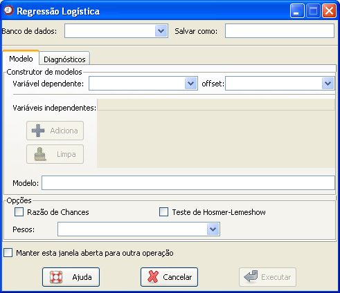
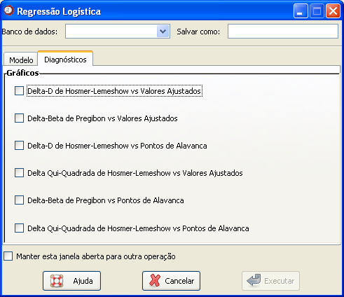

Regressão logística
Regressão logística
O caminho para essa função é: Análises

Figura 1. Janela "Regressão logística".
O primeiro passo é selecionar o banco de dados onde estão as variáveis que serão utilizadas. Para isso, é necessário que o banco já tenha sido aberto (detalhes sobre como abrir dados ou importar dados via ODBC).
Um campo de preenchimento opcional é o "Salvar como". Esse campo permite a criação de um novo objeto que será armazenado no Epi-R, apenas com duas colunas. Uma referente aos valores dos resíduos dos modelos e outra referente aos valores ajustados.
O próximo passo é construir o modelo de regressão desejado. Para isso, utilize as opções do Construtor de modelos.
Escolha a variável dependente, conhecida também como desfecho. Deve-se lembrar que para utilizar uma regressão logística é necessário que a variável de desfecho seja binária.
Quando desejar utilizar um offset, preencha o campo correspondente com a variável desejada. Esse campo é de preenchimento opcional.
Ao selecionar a variável dependente, o campo com as variáveis independentes será habilitado. Não é possível adicionar mais de uma variável ao mesmo tempo. Assim, marque uma variável desejada de cada vez e clique no botão "Adiciona". Alternativamente, as variáveis podem ser direcionadas para o campo "Modelo" com um duplo clique no mouse.
Para reiniciar o processo de escolha das variáveis, basta clicar no botão "Limpa". Ao fazer isso, todo o modelo deverá ser construído novamente, não apenas a última operação realizada.
À medida que o modelo for sendo construído, a expressão referente aparecerá no campo Modelo da janela. Esse campo não pode ser alterado manualmente. A variável que estiver antes do símbolo "~" é a variável dependente ou de desfecho. As demais, são as variáveis independentes, ou co-variáveis.
Outras informações que podem ser selecionadas no campo Opções, se referem à apresentação das razões de chances calculadas e do resultado do teste de Hosmer-Lemeshow*. Além disso, é possível escolher uma variável para ponderar a regressão, preenchendo o campo "Pesos".
Esse conjunto de opções define a parametrização do modelo. Em seguida, é possível escolher as opções desejadas para diagnóstico do modelo, como pode ser observado na figura 2. Escolha os gráficos desejados*.

Figura 2. Janela de diagnósticos para regressão logística.
Figura 2. Janela de diagnósticos para regressão logística.
Quando todas as opções desejadas estiverem marcadas, basta clicar em "Executar".
Para manter essa janela aberta e repetir a função, sem que seja necessário buscá-la no menu novamente, marque o campo "Manter esta janela aberta para outra operação". Lembre-se que se desejar armazenar os modelos gerados, é preciso definir um nome diferente para cada modelo, pois o Epi-R sobrescreverá o arquivo toda vez que o comando "Executar" for clicado.
* Detalhes em Hosmer, D. e Lmeshow, S. "Applied Logistic Regression".